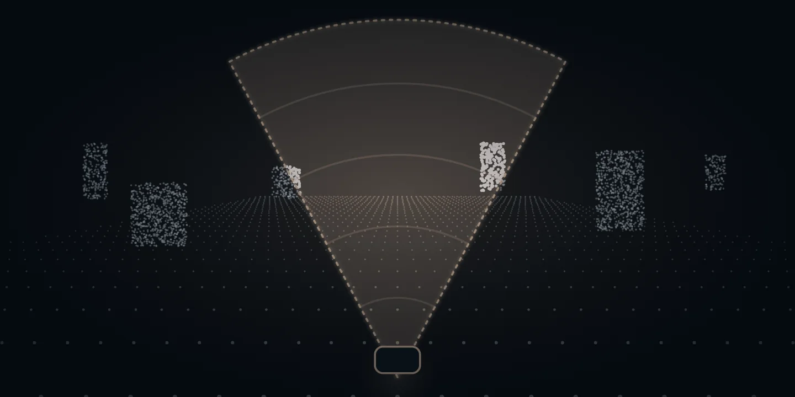
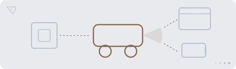

De … største af temaets … selskaberTemaets … selskaber
Tryk på et selskab for at se mere om det.
Vis alle … selskaber i temaet
Andele i PMINDI, den udgave af fonden, der udbetaler udbytte, pr. … (fondens data).

Et af de … temaer i NewDeal Invest
Leverer selskabet en sans, styringen eller hele maskinen?
Et system, der kan beskrive et rum, er ikke nødvendigvis en maskine, der kan bevæge sig i det. Udforsk sensorer, styring og bevægelse, og se forskellen på at levere en del og at bygge den færdige maskine.

… %
af PMINDI er placeret i temaet Robotter & fysisk AI.
Andele i PMINDI, den udgave af fonden, der udbetaler udbytte, pr. … (fondens data).
De … temaer efter størrelse. Robotter er nr. ….
Det har vi skrevet
Ordret uddrag af NewDeal Invests egne ugebreve og indlæg om temaet, med dato og link til hele teksten. Det er ikke en anbefaling.
»So despite Cybercab now entering service, Tesla’s autonomy story is still driven much more by potential than by proven scale. But Tesla’s bet is also fundamentally different from Waymo’s.«
På dansk (vores oversættelse): »Så selv om Cybercab nu er sat i drift, er Teslas historie om selvkørsel stadig drevet langt mere af potentiale end af bevist skala. Men Teslas satsning er også grundlæggende anderledes end Waymos.«
Nævner: Tesla, Waymo
Læs hele teksten på Substack (åbner i nyt vindue)Hvad der vejer mest
Mange tænker på menneskelignende robotter, når de hører om robotter og AI. I fonden ser det anderledes ud. Teslas samlede omsætning (biler, energi og tjenester) var i 2025 omkring fem gange så stor som værdien af alle de industrirobotter, der blev sat op i verden samme år, ifølge brancheforeningen IFR.
Robotterne er den mindste del, under en tiendedel af temaet. Tesla oplyser i sin årsrapport for 2025, at robotten Optimus er under udvikling. Skalselskabet Churchill Capital Corp XI har annonceret en sammenlægning med Agility Robotics, som laver menneskelignende robotter, men den er ikke gennemført. Et skalselskab er et selskab uden egen drift, som er oprettet for at gå sammen med et andet.
Ford og General Motors er med, fordi de laver elbiler og systemer, der hjælper føreren, men de fleste af Fords biler kører stadig på benzin eller diesel.
Øjne, hjerne og hjul
Tegningen viser én maskine med seks dele. Jo større en del er, jo mere fylder den i fonden. Tryk på en del for at se selskaberne.
Biler, der kører på strøm, og som ofte har systemer, der hjælper føreren med at styre og bremse.
Tryk på et selskab for at se, hvad det laver.
Flest selskaber ligger her. Droner, elektriske lufttaxaer, der letter lodret, og software, der kan overtage pilotens opgaver i et fly. Flere af selskaberne har kunder i forsvaret. Ifølge Archers kvartalsrapport pr. 30.06.2026 flyver lufttaxaen ikke med betalende passagerer. Selskabet arbejder på at få flyet godkendt. Om satellitter og raketter kan du læse på siden Rumfart.
Tryk på et selskab for at se, hvad det laver.
Små computere og enheder i hjem og industri, der måler, styrer og sender data videre. Som nerverne i en krop sender de signaler videre.
Tryk på et selskab for at se, hvad det laver.
Sensorer måler omgivelserne. Lidar måler afstand med laserlys, som sendes ud og kastes tilbage fra ting, så maskinen får et billede af det, der er rundt om den. Ét selskab laver sonar og robotter til brug under vand. Om chipsene inde i sensorerne kan du læse på siden Chips og halvledere.
Tryk på et selskab for at se, hvad det laver.
Software, der tolker det, øjnene ser, og vælger, hvad køretøjet skal gøre, fx bremse eller dreje. Tre af selskaberne har base i Kina. Flere kører med robottaxaer og selvkørende lastbiler.
Tryk på et selskab for at se, hvad det laver.
Robotter, der flytter kasser på lagre eller kører varer ud på fortovet. Det gør Teradyne, som ejer Universal Robots i Odense. Teradyne tælles under Chips og halvledere, se Også med en fod.
Tryk på et selskab for at se, hvad det laver.
Delene, set nærmere
Øjne
En lidar måler afstand med laserlys og tegner omgivelserne som prikker. TED-Ed forklarer, hvordan en selvkørende bil ser. Videoerne er ikke fondens holdning.
Se efter: Se efter forskellen på en demonstration og en maskine, der løser opgaven i drift.
Se efter: Se efter forskellen på en demonstration og en maskine, der løser opgaven i drift.
HjerneMed i en førerløs lastbilCNBC, 2026, på engelsk. En reporter kører med i en selvkørende lastbil i Texas.
Se efter: Se efter forskellen på en demonstration og en maskine, der løser opgaven i drift.
Arme og benSelskabets egen videoSmå robotter på et lagerSymbotic, 2025, på engelsk. Symbotic er et af fondens selskaber.
Se efter: Se efter forskellen på en demonstration og en maskine, der løser opgaven i drift.
Selskabets egen videoSådan opfatter en robot omgivelserneAgility, 2023, på engelsk. Agility Robotics er ikke selv i fonden.
Uden for tegningen
Disse selskaber hører først og fremmest til et andet tema, men laver også noget til maskinerne, fx batterier eller chips. De tælles med under deres eget hovedtema, ikke her.
Seks af selskaberne på tegningen laver også noget, der hører til et andet tema: Tesla og Shelly (Energi og elnet), Raspberry Pi og Horizon Robotics (Chips og halvledere), AIRO Group (Rumfart) og Swarmer (Software & AI). I fondens opdeling tælles de kun med her.
Set udefra
Her er udvalgte opslag og videoer fra medier og selskaber. De er ikke fondens holdning. „Kort fortalt“ er vores danske gengivelse. Opslaget hentes først fra X, når du trykker på „Vis opslaget“.
Delt af Mads Christiansen fra teamet bag NewDeal Invest
Robotter
Wall St Engine @wallstengine · på engelsk
Kort fortalt Ifølge Wall St Engine oplyser Tesla, at de første Optimus-robotter i produktionskvalitet nu kommer fra produktionslinjer på fabrikken i Fremont. Ifølge opslaget er produktionen stadig i en tidlig fase, og Tesla har ikke oplyst mængder eller en tidsplan.
Hvad skal du lægge mærke til? Læs opslaget sammen med afsnittet om robotter. Se efter forskellen på en demonstration og en maskine, der løser opgaven i drift.
Selvkørende kørsel
Reuters @Reuters · på engelsk
Kort fortalt Ifølge Reuters tester det kinesiske selskab Baidu en førerløs taxa i Londons gader. Baidu er ikke blandt fondens selskaber.
Hvad skal du lægge mærke til? Læs opslaget sammen med afsnittet om selvkørende kørsel. Se efter forskellen på en demonstration og en maskine, der løser opgaven i drift.
Robotter
The Information @theinformation · på engelsk
Hvad skal du lægge mærke til? Læs opslaget sammen med afsnittet om robotter. Se efter forskellen på en demonstration og en maskine, der løser opgaven i drift.
Tallene er Agility Robotics' egne.
Droner
Reuters @Reuters · på engelsk
Kort fortalt Ifølge Reuters vil private og statslige selskaber i Europa, der driver kritisk infrastruktur, styrke deres forsvar mod droner. Reuters skriver, at nogle forsyningsselskaber beder om lov til selv at skyde droner ned, og at regeringer fra Paris til Berlin følger sagen.
Hvad skal du lægge mærke til? Læs opslaget sammen med afsnittet om droner. Se efter forskellen på en demonstration og en maskine, der løser opgaven i drift.
Robotter
NVIDIA Robotics @NVIDIARobotics · på engelsk
Kort fortalt NVIDIA annoncerer nye værktøjer til at udvikle robotter. Samtidig viser Agile Robots en menneskelignende robot til forskning. Ifølge NVIDIA er robotten bygget på NVIDIAs software og computer til robotter, så forskere kan udvikle, træne og afprøve robottens færdigheder ét sted. Opslaget er NVIDIAs egen meddelelse. NVIDIA er blandt fondens selskaber og hører til temaet Chips og halvledere. Agile Robots er ikke blandt fondens selskaber.
Hvad skal du lægge mærke til? Læs opslaget sammen med afsnittet om robotter. Se efter forskellen på en demonstration og en maskine, der løser opgaven i drift.
Opslagene er udvalgt af teamet bag NewDeal Invest. Afsenderne og de nævnte selskaber står ikke bag denne side, og opslagene er ikke fondens vurdering.
Tryk på et selskab for at se mere om det.
Andele i PMINDI, den udgave af fonden, der udbetaler udbytte, pr. … (fondens data).
Udvalgte offentlige opslag om selskaberne i temaet. Opslagene er andres og ikke NewDeal Invests holdning.
Henter opslag …
Videre


Maskinerne har brug for chips, strøm, materialer og datacentre. De har deres egne temaer i fonden.
Tegninger, ikoner og videoplakater. Illustration: NewDeal Invest. Der er ingen fotos på siden.
Videoerne er fra TED-Ed, CNBC, Symbotic og Agility og vises fra YouTube, først når du trykker på dem. Opslagene er fra X. Logoer tilhører de enkelte selskaber og viser kun, hvilke selskaber fonden ejer aktier i. Afsenderne og selskaberne står ikke bag denne side, og der er intet samarbejde med dem.